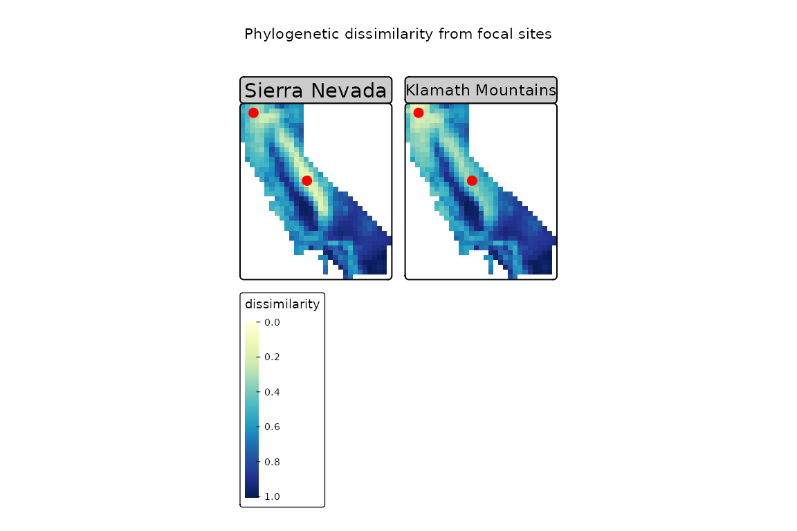
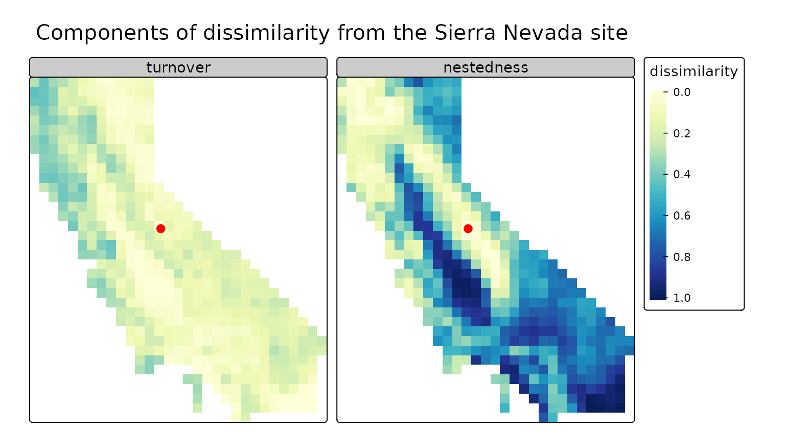
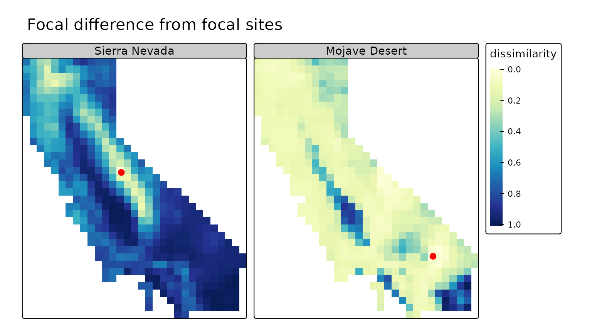
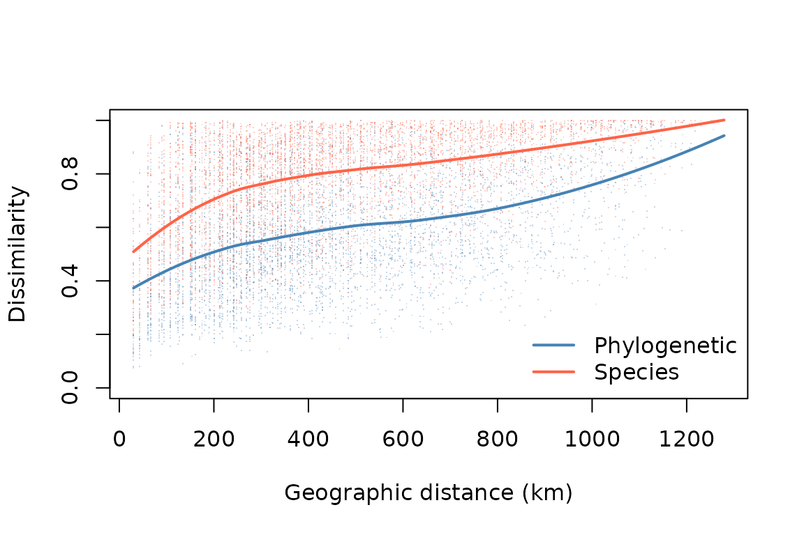
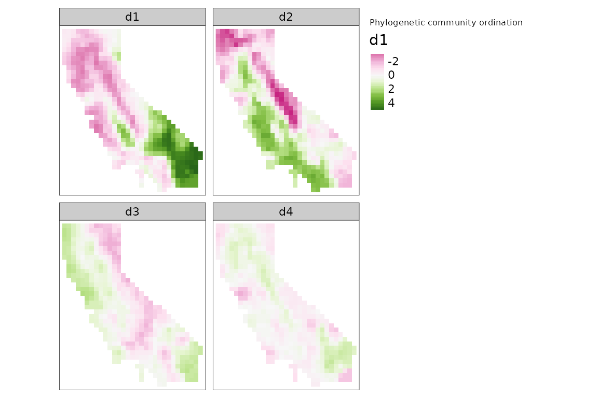
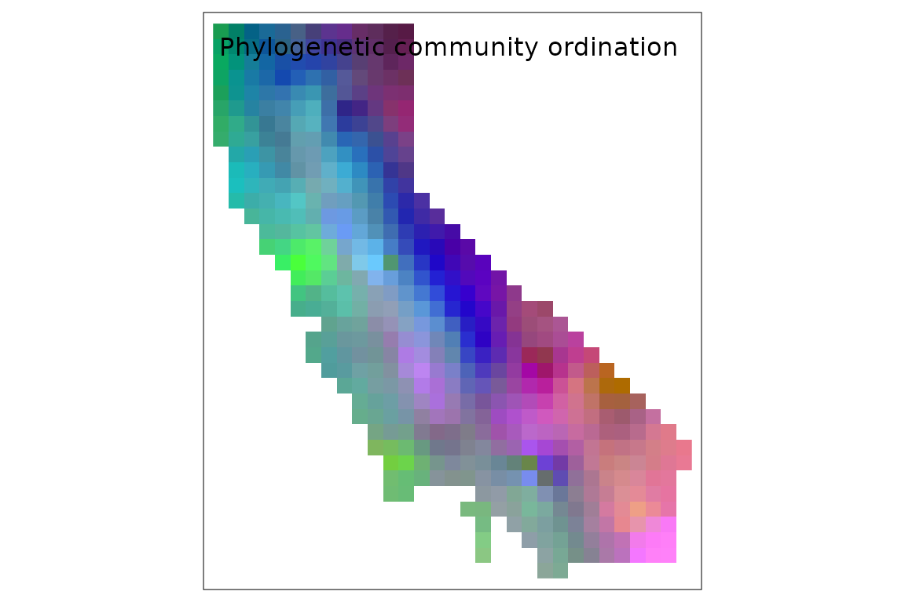
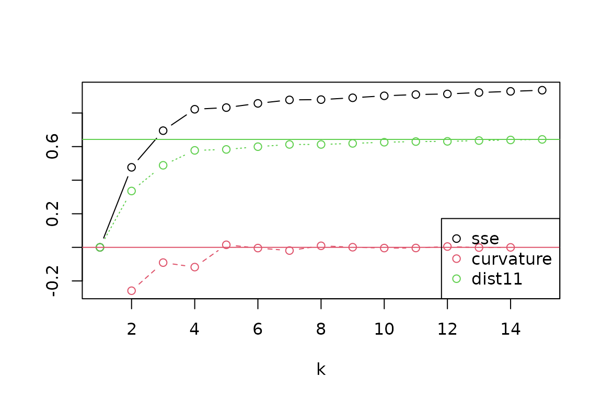
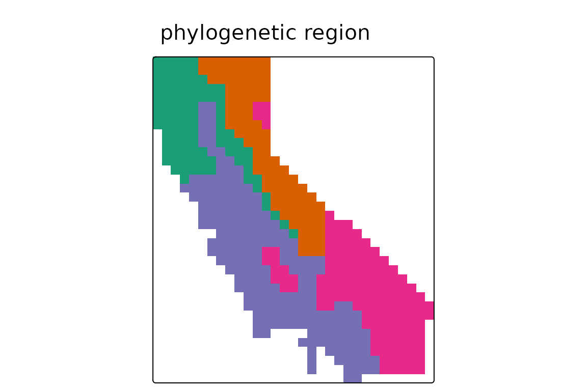

This vignette covers topics related to phylogenetic beta diversity, including calculation of pairwise dissimilarity between sites, mapping dissimilarity from focal sites, and use of these dissimilarity values in distance decay, ordination, and regionalization analyses.
To get started, let’s load the phylospatial library, as
well as tmap for visualization. Note that the functions
covered here all require a phylospatial object as input;
see vignette("phylospatial-data") for details on
constructing data sets. We’ll use the moss() example data
here.
Dissimilarity
The phylospatial package provides a range of methods for
calculating pairwise community phylogenetic distances among locations.
It can calculate phylogenetic versions of any quantitative community
dissimilarity metric available trough the vegan package,
including the various predefined indices provided through
vegan::vegdist as well as custom indices specified through
vegan::designdist. The default metric is Bray-Curtis
distance, also known as quantitative Sorensen’s dissimilarity.
Additional choices allow for partitioning dissimilarity in to turnover
and nestedness components.
Dissimilarity is computed using the function
ps_add_dissim(), which adds a distance matrix to the
dissim slot of your phylospatial data set. Or
if you just want the matrix itself, you can use
ps_dissim().
In addition to specifying the dissimilarity index to use, these
functions include options for different ways to scale the phylogenetic
community matrix before calculating dissimilarity. Setting
endemism = TRUE will scale every lineage’s occurrence
values to sum to 1 across all sites, giving greater weight to narrowly
distributed taxa. Setting normalize = TRUE scales every
site’s total occurrence value to sum to 1 across taxa, which results in
a distance matrix that emphasizes proportional differences in
composition rather than alpha diversity gradients.
Let’s run an example using quantitative Sorensen’s index, weighted by endemism. Printing the result, we can see it now contains dissimilarity data; this is a square distance matrix with a row and column for each site:
ps <- ps_add_dissim(ps, method = "sorensen", endemism = TRUE, normalize = TRUE)
ps
#> `phylospatial` object
#> - 884 lineages across 527 occupied sites (1116 total)
#> - community data type: probability
#> - branch length rescaling: sum1
#> - site weights: equal
#> - spatial data class: SpatRaster
#> - dissimilarity data: sorensenFocal site dissimilarity
A full dissimilarity matrix is hard to inspect directly, since it
contains a value for every pair of sites. One intuitive way to explore
it is to choose a focal site and map its dissimilarity to every other
site, showing where on the landscape similar lineage assemblages recur.
The function ps_dissim_focal() does this. It accepts the
same method and scaling options as
ps_dissim(), and gives the same values as the corresponding
row of the full matrix; for the Sorensen family and for custom
designdist formulas it computes only the focal rows, so it
stays fast even for large data sets, while other vegdist
indices compute the full matrix and keep the relevant rows. Note that it
computes dissimilarity from its own arguments, rather than reusing the
matrix stored by ps_add_dissim().
Focal sites can be given as site indices, as a two-column matrix of
coordinates in the coordinate system of the data set, or as
sf or SpatVector points, which are reprojected
as needed. Let’s compare two focal sites with very different moss
floras, one in the Sierra Nevada and one in the Mojave Desert, specified
by longitude and latitude. We’ll also write a small mapping function for
this section, which draws one panel per layer with the focal site marked
in red:
focal <- sf::st_as_sf(data.frame(site = c("Sierra Nevada", "Mojave Desert"),
lon = c(-119.6, -116), lat = c(37.8, 34.6)),
coords = c("lon", "lat"), crs = 4326)
focal$site <- factor(focal$site, levels = focal$site) # keep panels in this order
map_focal <- function(r, pts, title){
m <- tm_shape(r) +
tm_raster(col.scale = tm_scale_continuous(values = "brewer.yl_gn_bu",
limits = c(0, 1)),
col.legend = tm_legend(title = "dissimilarity",
position = tm_pos_out("right", "center")),
col.free = FALSE) +
tm_shape(pts) +
tm_dots(fill = "red", size = 0.6) +
tm_title(title)
# with several focal sites, show each site's point only in its own panel
if (nrow(pts) > 1) m <- m + tm_facets_wrap(by = "site", nrow = 1)
m
}
fd <- ps_dissim_focal(ps, focal, method = "sorensen")
names(fd) <- levels(focal$site)
map_focal(fd, focal, "Sorensen's dissimilarity from focal sites")
Dissimilarity is zero at each focal site and generally rises with distance, but not uniformly. The Sierra Nevada site is more similar to the distant mountains of northern California than to the nearby Central Valley, and most dissimilar from the southern deserts. The desert site shows the reverse pattern, resembling the southeastern deserts and parts of the southern coast ranges while differing strongly from the Sierra Nevada and the north. Patterns like these show which parts of the landscape share a site’s evolutionary history, and how sharply composition changes along environmental gradients.
As with ps_dissim(), Sorensen’s dissimilarity can be
partitioned into turnover and nestedness components. The turnover
component reflects replacement of lineages by different lineages, while
the nestedness component reflects sites holding subsets of one another’s
lineages. Let’s map both for the Sierra Nevada site:
fp <- c(ps_dissim_focal(ps, focal[1, ], method = "sorensen_turnover"),
ps_dissim_focal(ps, focal[1, ], method = "sorensen_nestedness"))
names(fp) <- c("turnover", "nestedness")
map_focal(fp, focal[1, ], "Components of dissimilarity from the Sierra Nevada site")
Most of this site’s dissimilarity from the rest of the state is due to nestedness: the site is rich in lineages, and other sites mostly hold subsets of them. Turnover, the replacement of its lineages by others, is modest everywhere.
ps_dissim_focal() also offers one index that isn’t
available in ps_dissim():
method = "focal_difference", the fraction of the focal
site’s branch length that is absent from each other site. Unlike
symmetric indices, it ignores lineages found only at the other site, so
a lineage-rich site that contains all of the focal site’s lineages has a
value of zero. Because it has a direction, it is only defined relative
to a focal site. It is the complement of a phylogenetic, quantitative
version of a dispersion field (Graves & Rahbek 2005, PNAS
102:7871-7876), the overlapping ranges of all lineages present at the
focal site. Let’s map it for both focal sites, for comparison with
Sorensen’s dissimilarity above:
fdiff <- ps_dissim_focal(ps, focal, method = "focal_difference")
names(fdiff) <- levels(focal$site)
map_focal(fdiff, focal, "Focal difference from focal sites")
For the lineage-rich Sierra Nevada site,
focal_difference looks much like Sorensen’s dissimilarity
in the earlier plot, since sites that differ from it mostly do so by
lacking its lineages. For the desert site, the two indices tell very
different stories. Sorensen’s index in the earlier figure rates the
lineage-rich northern mountains as highly dissimilar, because they hold
many lineages the desert site lacks. But here,
focal_difference shows that the desert site’s own lineages
occur nearly everywhere: its assemblage is largely a subset of the
state’s moss flora, and its lineages are missing mainly from parts of
the Central Valley and the far southeastern deserts.
Distance decay
One frequent use of dissimilarity matrices is to analyze how commmunity phylogentic similarity declines with geographic distance, environmental difference, or other geographic properties. Common methods for this kind of analysis include generalized dissimilarity modeling and partial Mantel tests.
Here let’s just visualize how phylogenetic turnover changes with the
distance between sites. We can compute a pairwise geographic distance
matrix using ps_geodist(). Let’s also compare this to
non-phylogenetic species turnover, which we can compute by specifying
tips_only = TRUE. We can summarize the pattern with a LOESS
curve:
phy_beta <- as.vector(ps_dissim(ps, method = "sorensen"))
spp_beta <- as.vector(ps_dissim(ps, method = "sorensen", tips_only = TRUE))
geo_dist <- as.vector(ps_geodist(ps)) / 1000 # convert to km
# subsample for plotting (full pairwise set is huge)
ss <- sample(length(phy_beta), 5000)
plot(geo_dist[ss], phy_beta[ss],
pch = ".", col = adjustcolor("steelblue", 0.3),
xlab = "Geographic distance (km)",
ylab = "Dissimilarity",
ylim = c(0, 1))
points(geo_dist[ss], spp_beta[ss],
pch = ".", col = adjustcolor("tomato", 0.3))
# loess trend lines
lo_phy <- loess(phy_beta[ss] ~ geo_dist[ss])
lo_spp <- loess(spp_beta[ss] ~ geo_dist[ss])
ox <- order(geo_dist[ss])
lines(geo_dist[ss][ox], predict(lo_phy)[ox], col = "steelblue", lwd = 2)
lines(geo_dist[ss][ox], predict(lo_spp)[ox], col = "tomato", lwd = 2)
legend("bottomright",
legend = c("Phylogenetic", "Species"),
col = c("steelblue", "tomato"),
lwd = 2, bty = "n")
Ordination
Additional approaches for assessing spatial turnover patterns include
ordination or clustering, both of which reduce a dissimilarity matrix
into a lower-dimensional summary. Ordination, which is implemented in
the function ps_ordinate(), identifies the dominant axes of
variation in phylogenetic turnover, which can then be used for
visualization or analysis. The funtion offers various ordination
methods. Let’s perform a PCA, and make maps of the first four
dimensions:
ps %>%
ps_ordinate(method = "pca", k = 4) %>%
tm_shape() +
tm_raster(col.scale = tm_scale_continuous(values = "brewer.pi_yg"),
col.free = FALSE) +
tm_title("Phylogenetic community ordination")
We can also qualitatively visualize compositional patterns by
converting ordination axes to a set of colors representing how similar
two sites are to each other, using the ps_rgb() function.
Let’s do that here, using the "cmds" (classical
multidimensional scaling) ordination algorithm, and then plot the result
using tmap::tm_rgb():
ps %>%
ps_rgb(method = "cmds") %>%
tm_shape() +
tm_rgb(col.scale = tm_scale_rgb(max_color_value = 1),
interpolate = FALSE) +
tm_title("Phylogenetic community ordination")
Regionalization
We can also perform a more formal cluster analysis that splits the
landscape into a set of evolutionary bioregions, using the
ps_regions() function. To do this, we need to specify the
clustering method and the number of clusters
(k). Choices of method include k-means and various
hierarchical clustering methods; note that results are sometimes highly
sensitive to which method is selected. The hierarchical methods require
a dissimilarity matrix calculated by first running
ps_add_dissim(), while k-means does not.
Choosing k is usually subjective. Many alternative
methods have been proposed in the literature to identify the “optimal”
number of clusters in a data set, but ecological data are often
inherently characterized by continuous gradients rather than discrete
provinces, in which case no value of k may clearly fit
best. You can use the function ps_regions_eval() to help
evaluate how well different choices for k fit the data by
comparing the variance explained by different numbers of clusters. Let’s
do that here, using the "average" hierarchical clustering
method:
ps_regions_eval(ps, k = 1:15, plot = TRUE, method = "average")
From the evaluation plot, it looks like a value ofk = 4
stands out as the most distinct “elbow” in explained variance (“SSE”),
with near-maximum distance to the 1:1 line (“dist11”), and with more
negative “curvature” than its neighbors, though other choices could also
be reasonable. Let’s generate results for four regions, and then make a
map of these zones:
ps %>%
ps_regions(k = 4, method = "average") %>%
tm_shape() +
tm_raster(col.scale = tm_scale_categorical(values = "brewer.dark2"),
col.legend = tm_legend(show = FALSE)) +
tm_title("phylogenetic region")